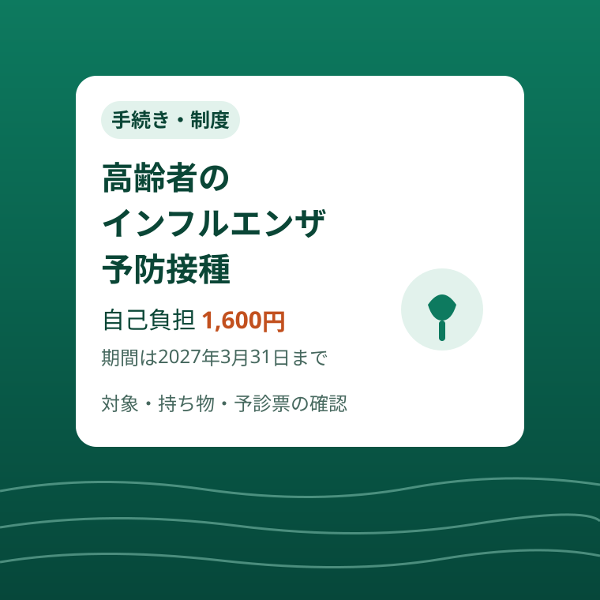

手続き・制度
磐田市の高齢者インフルエンザ予防接種｜自己負担1,600円と対象の確認

この記事の要点
Q. 磐田市の高齢者インフルエンザ予防接種は、いくらで受けられますか？
A. 助成の対象なら自己負担1,600円です。期間は2027年3月31日まで。対象は接種日に磐田市に住民登録がある65歳以上の方などです。磐田市などの協力医療機関なら事前の申請は要らず、予診票は医療機関で配布されます。
導入——11月、接種の案内が手元にない季節
11月に入り、インフルエンザの予防接種を受ける人が増える時期になりました。かかりつけの医療機関の待合室で接種の掲示を見かけることも多くなります。
磐田市には、65歳以上の方などを対象に、インフルエンザ予防接種の費用を助成する仕組みがあります。令和8年度の案内は市の公式ページに出ていますが、市から対象者へ案内や予診票が郵送される仕組みではありません。知らないまま時期を過ぎると、助成の対象でも全額自己負担の任意接種として受けることになります。
「去年も受けたから」と思っていても、年度が替われば期間も自己負担額も案内し直されます。今年度の条件を、市の公式ページで確認した範囲に絞って整理します。
この記事は手続きの整理です。予防接種を受けるかどうかは、体調や持病も含めて本人が医療機関と相談して決めるものです。ここでは、受けることにした場合に迷わないための、対象・金額・段取りだけを扱います。
先に結論を書きます。助成の対象なら自己負担は1,600円、期間は2027年3月31日まであります。磐田市などの協力医療機関で受けるなら、事前の申請は要りません。
まず、公式資料から事実を整理する
磐田市の公式ページ「令和8年度 高齢者インフルエンザ予防接種費用の助成」によると、実施期間は令和8年（2026年）10月1日から令和9年（2027年）3月31日まで、接種回数は1回です。医療機関によってはワクチンの供給状況で接種専用の期間を設けている場合があるため、事前に医療機関へ確認するよう案内されています。
対象者は、接種日当日に磐田市に住民登録がある方で、次のどちらかを満たす方です。（1）65歳以上の方。（2）60歳以上65歳未満で、心臓、腎臓又は呼吸器等に重い障害がある方です。（2）は、身の回りの生活が極度に制限される程度の障害、またはヒト免疫不全ウイルスによる免疫の機能の障害で日常生活がほとんど不可能な方で、その疾患が身体障害1級相当の方とされています。
自己負担額は1,600円です。生活保護世帯の方は、磐田市が発行した「高齢者インフルエンザ予防接種無料券」を提出すれば無料になります。ただし、接種後の払い戻しはできません。無料券は接種を受ける前に、必ず医療機関へ提出してください、と市は明記しています。
持ち物は、マイナ保険証または資格確認書、自己負担金1,600円（無料券をお持ちの方は自己負担なし）です。対象者（2）に該当する方は、身体障害者手帳も必要です。
見落としやすいのが予診票です。予診票は市の協力医療機関で配布していて、個別に案内や予診票の郵送は行いません、と市は書いています。「市から封筒が届くのを待つ」ものではない、という点がこの制度の入口の注意点です。
他のワクチンとの関係も公式ページにあります。他のワクチンとの同時接種は、特に医師が必要と認めた場合に可能です。また、他のワクチンとの接種間隔に制限はありません。同じ時期に高齢者新型コロナ予防接種の助成も行われていますが、こちらは自己負担額が異なります。窓口で「インフルエンザのつもりが別の接種だった」という取り違えが起きないよう、予約のときに接種の名前をはっきり伝えてください。
この助成は令和8年度のものです。高齢者の予防接種の助成は年度ごとに案内され、期間も自己負担額も年度で変わります。昨年度の広報や医療機関の掲示を覚えていても、今年度の条件は今年度の公式ページで確かめ直してください。とくに自己負担額は、家族へ伝える金額でもあるため、古い記憶のまま伝えると当日の支払いでずれが生じます。

対象者以外の方が受ける場合は任意接種となり、全額自己負担です。金額は医療機関によって異なります。「65歳の誕生日を迎える前に対象になるか」は、接種日当日に65歳以上であるかどうかで判断されます。誕生日の前後で迷う場合は、健康増進課か医療機関に確認してください。
磐田の暮らしに置き換える
磐田市、袋井市、森町、浜松市天竜区・旧浜北区の協力医療機関で接種する場合は、事前の申請は必要ありません。かかりつけの医療機関へ直接受診します。予約が必要な医療機関があるため、市の公式ページにある協力医療機関一覧で、かかりつけが載っているか、予約が要るかを先に確認するのが段取りの第一歩です。
この「近隣市町と共通の協力医療機関」という形は、磐田の暮らしに合っています。住所は磐田でも、かかりつけは袋井や森町、という人は少なくありません。市境を越えたかかりつけでも、申請なしで同じ助成が使えるのは、使う側にとって大きな実務上の利点です。
一方、協力医療機関以外での接種を希望する場合は、手続きが変わります。医療機関に提出する予防接種依頼書の発行が必要で、事前に健康増進課（iプラザ3階）または各支所市民生活課へ相談・申請します。市の申込フォームからも申請できます。申請の受付は令和8年9月14日から始まっています。
静岡県外の医療機関で受けたい方は、さらに扱いが別です。申込フォームからは申請できないため、健康増進課（0538-37-2011）へ電話するよう案内されています。帰省のついでに実家のかかりつけで、という計画は、出発前に一度電話で確認してから立ててください。
施設に入居している方や入院中の方については、施設・病院の職員を通じた依頼書の申請の方法が別に案内されています。家族が代わりに動く場合は、本人が施設にいるのか自宅にいるのかで窓口が変わる点に注意してください。
健康増進課は、磐田市の保健センター機能を担う「iプラザ」の3階にあります。依頼書の相談や無料券の確認など、窓口で済ませたい相談はこの課が担当です。各支所の市民生活課でも相談・申請は受け付けています。医療機関で受けるだけなら窓口へ行く必要はありませんが、「自分の場合はどの手続きか」が曖昧なときの確認先として覚えておくと迷いません。

時期の置き方にも目を配ってください。期間は3月31日までと長く見えますが、市は医療機関ごとに接種専用の期間がある場合を示しています。受けようと思った時点でかかりつけの受付が終わっていた、という事態を避けるには、11月のうちに一度、かかりつけへ電話しておくのが確実です。
評価——良い点と、注文したい点
良い点は、自己負担が1,600円と定額で、金額の見通しが立つことです。任意接種の金額は医療機関ごとに異なりますが、助成の対象なら「行けばいくらか」が先に分かります。高齢の家族へ声をかけるときも、金額が示せるかどうかで話の進み方が変わります。
良い点はもう一つ、協力医療機関なら事前申請が要らないことです。依頼書を取りに行く、郵送を待つ、という前段がないため、思い立った日にかかりつけへ電話すれば段取りが始まります。近隣市町の医療機関まで対象が広がっている点も含め、「いつもの受診」の延長で使える設計です。
注文したい点は、予診票が医療機関で配布され、市からの郵送がないことが、案内の受け手に伝わりにくい点です。「案内が届かないから今年は対象外なのか」と誤解する人が出かねません。対象者への個別通知がない制度ほど、広報や医療機関の掲示で「予診票は医療機関でもらうもの」という一文を目立たせてほしいところです。
注文したい点はもう一つ、新型コロナの助成と時期が重なり、自己負担額が大きく違う点です。インフルエンザは1,600円、新型コロナは別の金額で、同じ窓口・同じ時期に案内されます。「高齢者の予防接種」とひとくくりに覚えると、予約や支払いの場面で取り違えます。接種ごとに名前と金額を分けた早見表のような案内があると、窓口での行き違いは減るはずです。
期間が3月31日までと長いことも、使う側には利点です。体調の良い日を選べますし、家族の通院のついでに合わせることもできます。ただし、医療機関ごとの接種期間は別にあるため、「制度の期間内＝いつでも受けられる」ではない点だけは押さえておいてください。
対案・結論——11月のうちに、かかりつけへ一度電話を
結論として、この制度でいちばん大切な行動は「早めに、かかりつけの医療機関へ電話すること」です。協力医療機関かどうか、予約が要るか、接種できる期間はいつまでか。この3点は、市のページだけでは個人ごとに確定しません。電話一本で固まります。
夫婦で対象になる場合は、二人分をまとめて確認してください。同じ医療機関で同じ日に受けられるか、無料券の対象になる世帯かは、世帯の状況で変わります。別々に動くと、片方だけ予約の枠から漏れることがあります。
生活保護世帯の方は、無料券を接種前に提出しないと無料にならず、払い戻しもできない点が分かれ目です。券を持っているかどうかを、受ける前に必ず確かめてください。券の発行については健康増進課へ相談してください。
協力医療機関以外や県外での接種を考える場合は、依頼書の発行に日数がかかる前提で、早めに健康増進課へ相談することです。受けたい日から逆算して、申請を先に済ませておくと当日に詰まりません。
確認する順番
- 自分（と家族）が対象者（1）（2）のどちらに当たるかを確かめる。接種日に磐田市に住民登録があることが前提
- かかりつけが協力医療機関の一覧に載っているか、予約が要るかを市の公式ページと電話で確かめる
- 持ち物をそろえる。マイナ保険証または資格確認書、自己負担金1,600円、無料券（対象世帯）、対象（2）の方は身体障害者手帳
- 協力医療機関以外・県外で受ける場合は、先に健康増進課へ相談して依頼書の発行を受ける
家族で共有するための記録
予防接種は、家族の側が段取りを助ける場面の多い手続きです。離れて暮らす親が対象なら、「期間は3月末まで」「自己負担は1,600円」「予診票は病院でもらうもの」という3点を先に伝えておくだけで、本人の動き出しが早まります。
受けた後は、接種した日と医療機関の名前を家族で共有しておくと、翌年以降の目安になります。今年度の記録は来年度の案内と照らす材料にもなりますし、かかりつけを変えるときにも役立ちます。
無料券を使ったかどうかも記録に残してください。来年度、世帯の状況が変わっていれば扱いも変わります。「去年は無料だった」という記憶だけで動くと、今年度の条件とずれることがあります。
大石の視点
ここからは公表情報ではなく、執筆者の見解です。介護や不動産の現場で高齢の方と接していると、冬の体調不良ひとつで、住まいの手続きも施設の見学も、予定全体が後ろへ倒れる場面を見ます。予防接種そのものの判断は医療の話ですが、「受けるなら段取りで詰まらない」ことは暮らしの話です。
この制度は、金額・期間・窓口がはっきりしている点で、使う側に親切な設計だと思います。残るつまずきは、「予診票は郵送されてこない」「かかりつけが協力医療機関かどうかは自分で確かめる」という、最初の一歩の情報です。知っているかどうかで差がつく部分を、この記事で先に潰しておきたいと考えました。
欲を言えば、協力医療機関の一覧が、予約の要否まで含めて医療機関ごとに一目で分かる形になると、電話の前の迷いがさらに減るはずです。仕組みはすでにあります。届け方の工夫が次の一歩だと感じています。
まとめ
磐田市の高齢者インフルエンザ予防接種の助成は、対象なら自己負担1,600円、期間は2027年3月31日まで、協力医療機関なら事前申請は不要です。予診票は市から郵送されず、医療機関で配布されます。
まずは、かかりつけの医療機関が協力医療機関かどうかを確かめ、電話で予約の要否を聞くところから始めてください。それが今日できる一歩です。対象の家族がいる場合は、その電話で家族の分も一緒に確かめておくと、二度手間になりません。
制度の内容は変わることがあります。受ける前に、磐田市の公式ページで最新の案内を確認してください。
- 対象は65歳以上の方など。自己負担1,600円で期間は2027年3月31日まで
- 磐田市などの協力医療機関なら事前申請は不要。予診票は医療機関で配布され、郵送はない
- 生活保護世帯は無料券で無料。ただし接種前に提出が必要で、払い戻しはできない
参考にした公式情報
- 令和8年度 高齢者インフルエンザ予防接種費用の助成／磐田市（2026年11月10日確認）
- 令和8年度 高齢者新型コロナ予防接種費用の助成／磐田市（2026年11月10日確認）
最終確認日：2026-11-10 ／ 本記事は公表情報と執筆者の見解を分けて記載しています。制度・数値・公開状況は変更される場合があるため、最新情報は磐田市公式ページでご確認ください。